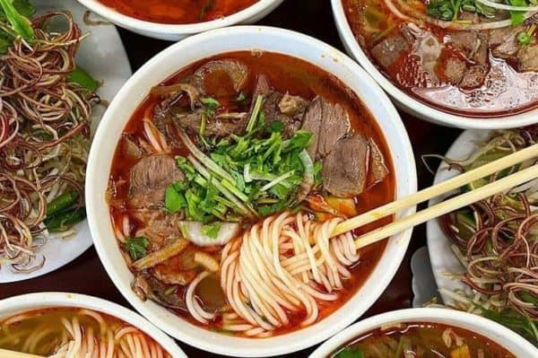

Description
Bún Bò Huế is a traditional Vietnamese soup originating from the city of Huế.
It is known for its spicy and flavorful broth, which is made from beef bones, lemongrass, and a variety of spices.
The dish typically includes rice vermicelli noodles, thinly sliced beef, and sometimes pork, garnished with
fresh herbs, lime, and chili.
Ingredients
- 500g beef shank, thinly sliced
- 200g rice vermicelli noodles
- 2 stalks lemongrass, bruised
- 1 onion, sliced
- 2 tablespoons fish sauce
- 1 teaspoon chili paste (optional)
- Fresh herbs (cilantro, mint, Thai basil)
- Lime wedges
Instructions
- In a large pot, bring water to a boil and add the beef shank, lemongrass, and onion.
Simmer for 1-2 hours to create a rich broth.
- Remove the beef shank and slice it thinly. Strain the broth to remove solids and return it to the pot.
- Add fish sauce and chili paste to the broth, adjusting to taste. Simmer for an additional 10 minutes.
- Cook the rice vermicelli noodles according to package instructions, then rinse with cold water and drain.
- To serve, place a portion of noodles in a bowl, top with sliced beef, and ladle the hot broth over.
Garnish with fresh herbs and lime wedges.
Home